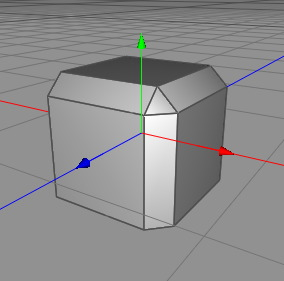
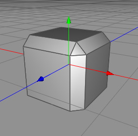

Bevel Tool
The bevel tool is one of the most basic polygon tools available. It is very useful if you want to increase the detail of a polygon mesh. See the pictures below to understand want the bevel tool does in the differnt editing modes.
Modes
The bevel tool can only be applied to raw polygon objects. It's polygon, edge and point mode.

To perform an bevel onto a point selection, just click in the 3D view. You can now adjust the bevel strength by dragging the mouse to the left or right. Release the mouse button to complete the operation.Take care, since under some circumstances it can be possible that overlapping polygons will be created.

Before and after the bevel operation.
Similar to usage in point mode. 

Before and after the bevel operation.
Similar to usage in point mode.
Before and after the bevel operation.
Keys
- none
Properties
- Subdivs: This property determines in how many segments the bevel is subdivided.
- Quantize: Set this property to 0 if you want to bevel continuously, otherwise this value determines the quantizes the bevel radius.